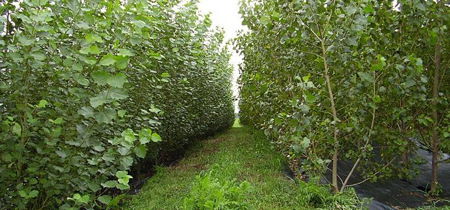
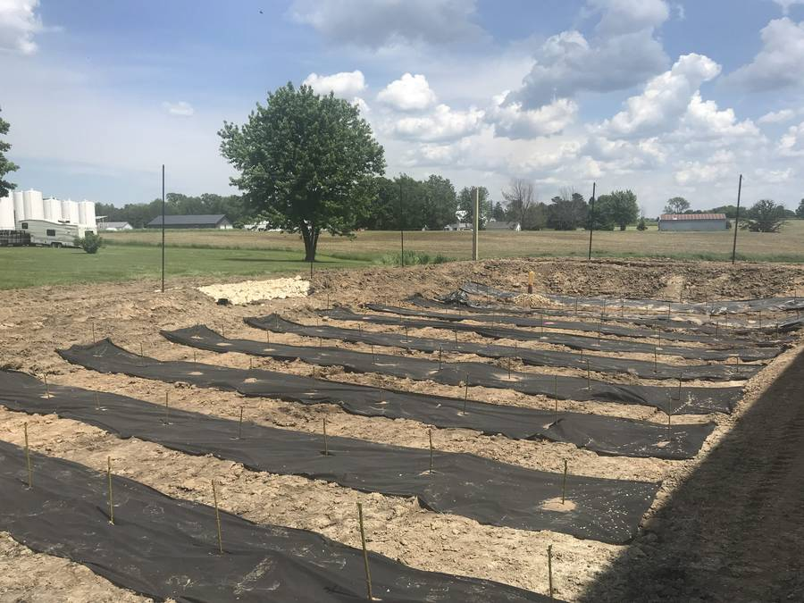
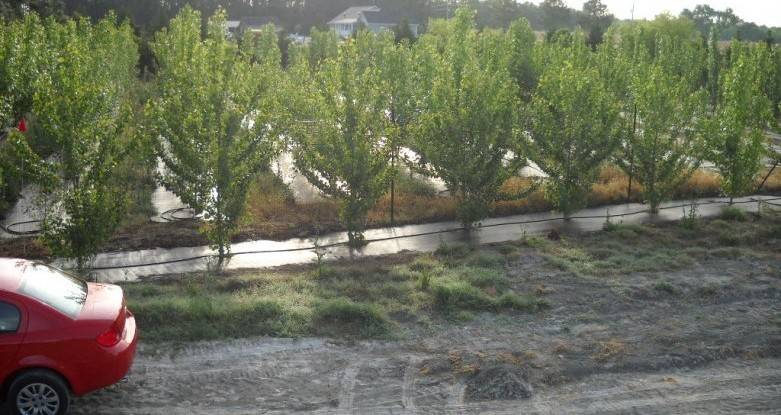

Est. 1996Environmental engineering · Phytotechnology
Remedies that hold up under review.
Sand County Environmental closes contaminated sites for landfill owners, agricultural-chemical facilities, lenders and counsel. Thirty years of geology, soil science and plant-based treatment, in more than twenty states.
01The practice
A poplar stand is a treatment system.
In 1999 we installed our first phytoremediation stand. Twenty-six years later we remain the country's leading practitioner of plant-based remedies: hybrid poplar and willow systems that pull contaminated water out of the ground and metabolise what is dissolved in it.
The mechanism is unglamorous and measurable. A mature poplar moves roughly forty gallons a day. An acre of stand can evapotranspire more than three million gallons in a season, which is often the entire groundwater flux through a site. No pumps, no power draw, no discharge permit.
It is not the right instrument everywhere, and we say so. Where it fits, it usually costs a fraction of pump-and-treat or haul-and-fill, and it gets approved: phytotechnology is recognised by the U.S. EPA and has been applied at Superfund sites across the country. The rest of our work is the conventional kind, done to the same standard.
Figures from a closed municipal landfill, fourth growing season of growth.
02Services
Eight practices, one case file.
Most clients arrive with one problem and leave with a file that touches several of these.
01Phytoremediation & phytotechnology
In-situ and ex-situ plant-based systems for landfill leachate, groundwater, stormwater, wastewater effluent and impacted soil, carried from characterisation through feasibility testing, design, permitting, installation, operation and monitoring.
Applied at landfills, dry cleaners, refineries, ag-chem terminals and Superfund sites in 20+ states
02Solid waste & landfill services
Groundwater, surface water and landfill gas monitoring; leachate management and on-site treatment; alternative and hybrid poplar covers; soil vapour extraction and passive venting, all to WDNR rules.
Applied at a 40-acre closed town landfill complex; a paper company landfill in North Central Wisconsin
03Agricultural-chemical facilities
Containment assessment, nutrient and pesticide remediation, facility design, stormwater management and Wisconsin ACCP case closure, at more than 265 ag-chem handling facilities.
Applied at a 150,000-pound subsurface nitrogen release; a banned dinoseb stockpile
04Environmental site assessment
ASTM Phase I and Phase II ESAs and due diligence for property transfers, soil, groundwater and vapour investigation, post-remediation monitoring and regulatory closure, written for a lender, a buyer and a regulator alike.
Applied at a 50-year record review for a river terminal in Minnesota; brownfield, foundry and drycleaner closures
05Stormwater, wetlands & compliance
WinSLAMM and HydroCAD modelling, pond permitting, NOI, erosion control and management plans; wetland delineation and restoration, shoreland permitting, PFAS leachate pre-treatment, asbestos, Hazmat & RCRA, SPCC and stack test data entry.
Applied at a DATCP-overseen willow basin system; a lined pond cutting TSS by 44%
03Remedy finder
Start with the problem on your site.
Four of the calls we get most often. Pick one to see how we closed it, and what it cost.
Closed municipal landfill · Northern Wisconsin
In-situ phytoremediation of landfill leachate
An older, unlined municipal landfill built in a peat wetland, with the water table sitting inside the waste. We designed and installed a full-scale poplar and willow stand to control groundwater migration and leachate concentrations. By the fourth season it was evapotranspiring more than three million gallons per acre per year.
Case files in the recordLiquid fertiliser manufacturer · Iowa
Phytoremediation of nitrate in groundwater
Long-term leakage from manufacturing equipment left ammonia and nitrate in soil and groundwater. We planted 3.5 acres of hybrid poplar and willow, then trained the plant's own staff to run the operation and maintenance, which took the consulting cost out of the remedy. The stand pulled significant water and nitrogen from the aquifer and sharply reduced off-site migration.
Case files in the recordPetroleum bulk plant · Northern Wisconsin
Phytoremediation of petroleum in groundwater
The most heavily contaminated soil was excavated and treated off site. For the residual plume, we compared final remedies and phytoremediation won on cost. Roughly 200 poplars were planted directly over the plume and are capturing about the site's entire groundwater flux each year, on solar power rather than grid power.
Case files in the recordOrganic fertiliser facility · Wisconsin, 2023
Willow detention basins for stormwater
After repeated uncontrolled runoff events, the Wisconsin Department of Agriculture, Trade and Consumer Protection asked the facility to manage and treat runoff from part of the site. We designed and installed two detention basins planted with willows and automated irrigation to establish the trees, with native sedges, rushes and forbs seeded in and around them for extra treatment and pollinator habitat.
Case files in the record04Project record
Files from the record.
Every project is drawn from our own gallery. Locations are described the way we describe them in reports: by region, not by client name.

Hybrid poplar landfill cover, irrigation and groundwater monitoring
A closed landfill holding paper mill waste from a company that no longer exists. We designed, received WDNR approval for and built a pilot tree cover to cut leachate generation, then deployed the trees across most of the cover.
Leachate collected from the landfill now feeds a highly automated irrigation system that waters the trees on the cover, which removes most of the trucking to the POTW and the fuel cost that went with it. We still run the groundwater monitoring and operate the leachate treatment system.
 Ex-situ phytoremediation of paper mill landfill leachateNorthern Wisconsin
3 acres planted. Leachate treatment had been costing $19,000 a year; the system cost $23,000 to install. Payback in a little over one year.
Ex-situ phytoremediation of paper mill landfill leachateNorthern Wisconsin
3 acres planted. Leachate treatment had been costing $19,000 a year; the system cost $23,000 to install. Payback in a little over one year.

Willow detention basins for stormwaterWisconsin · 2023 Two planted basins treating runoff after repeated uncontrolled discharge events, under DATCP oversight, with native seeding and pollinator habitat.
Phytoremediation of nitrate in groundwaterIowa 3.5 acres of poplar and willow over groundwater carrying up to 7,000 ppm ammonia-N. Client staff trained to run their own O&M.05The people who sign the reports
Credentials, not adjectives.
Geologists, engineers, soil scientists and hydrogeologists. Most of the senior staff have more than twenty years in consulting, and most have been here a decade or more.
Have a site with a file already open?
Send the address and the contaminant. We will tell you what the file needs, and whether a plant-based remedy fits it.